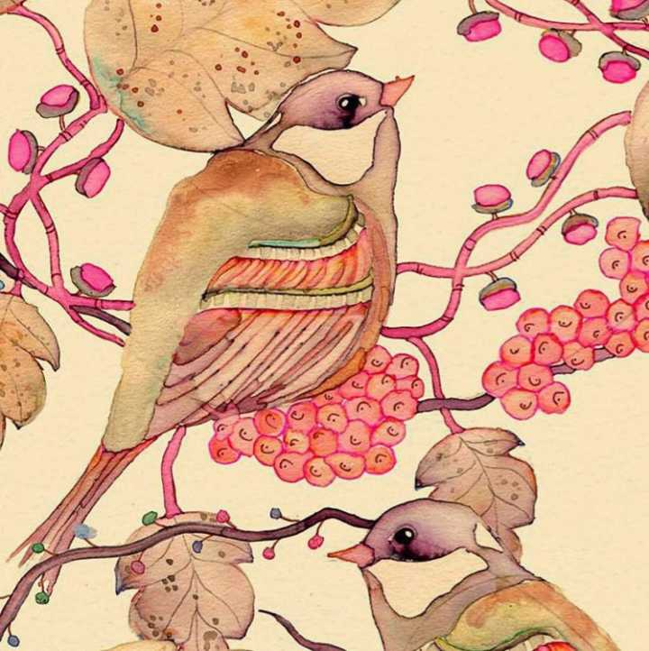
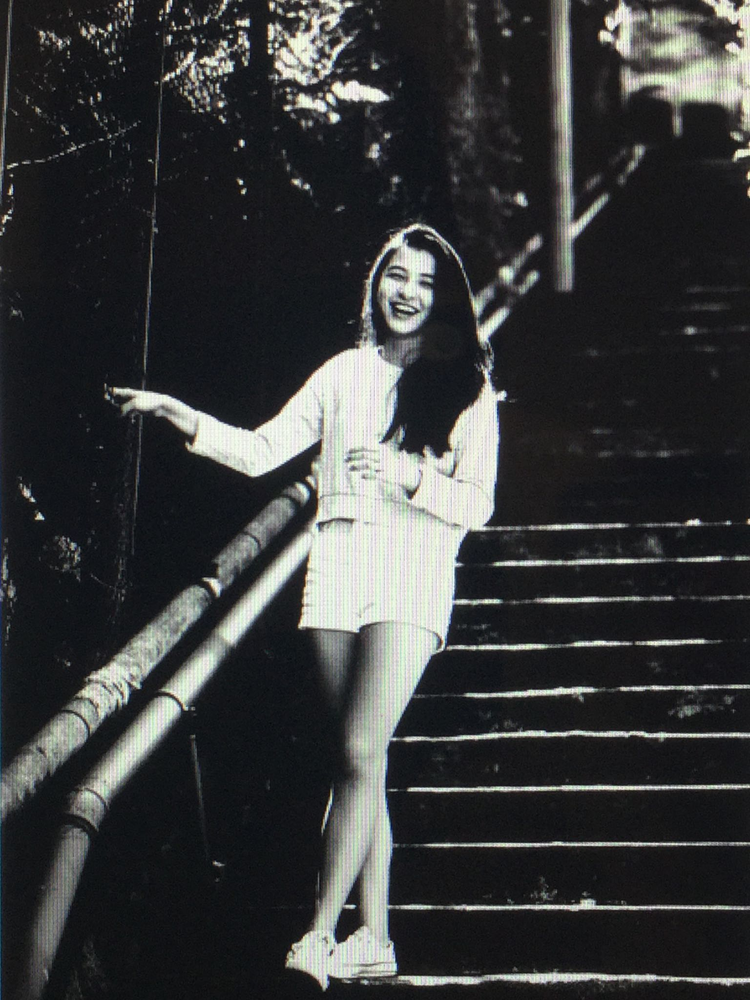
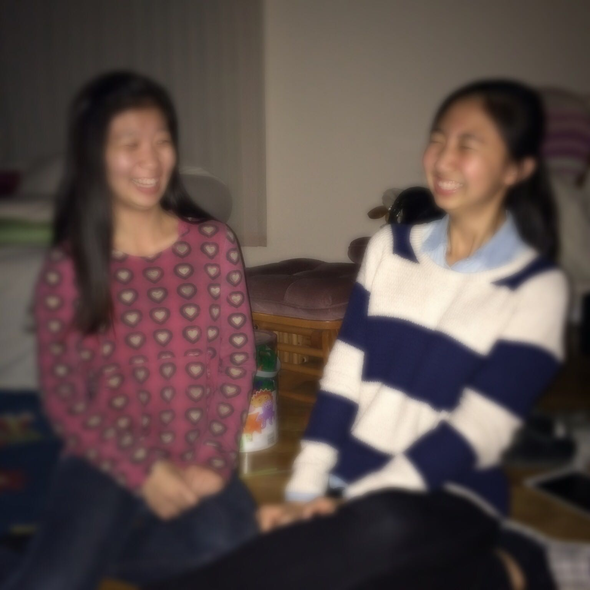

名字:
Crossing Lily
性别:女

介绍:
问题
答案
新建于:2014-11-19 09:06:39 AM，更新于2014-11-19 09:38:58 AM
Pre上一页
Next下一页
跳页:
正文: 答题不是晒照片orz
1. 找照片。目标为跟你长得像的明星或你觉得长的美的人
2. 对着镜子跟这个人学她/他是怎么笑的
3. 自己拍几张照片看效果 然后评价改正 （如果看到满意的效果 就多加练习）
因为首先如果模仿你觉得美的人 那一定是符合你审美标准的。
不论这个人是浅笑 大笑 眯眼笑；横着 或者竖着笑。你都喜欢的话 就都可以学学啊~
以后用到不同场合嘛。（而且会越学越像 最后就成自己的笑了）
还有一点，眼睛很重要。很多时候“内心快乐”这种东西是从眼睛体现的。
一定要想着跟镜头眉目传情的节奏！！！......（再看 再看就把你吃掉）
拍照的时候想一想女神/男神的笑 想一想镜子里模仿他们的美丽的自己 想一想开心的事。
这个是我很喜欢的一个女生。不一定是明星 符合你审美就好。

笑的太僵一般是摆姿势摆太久了 或者跟摄影师不熟。
笑得太开一般是和好朋友们玩的太开心了 这个可以美美的重拍一张。开心这种事无法避免。（但是例如我 脸上肉比较多的，很容易就笑的太列了。。。多练习哈）
而且发自内心的笑有时不一定符合好看的标准。。。。。但是有暖暖的回忆：） 这是我生日

最后说一句。
接受自己 从欣赏和喜爱自己的笑容开始吧~ （每天早上对着镜子笑一个 心情会很好啊 萌萌哒/酷酷哒）
Pre上一页
Next下一页
跳页: